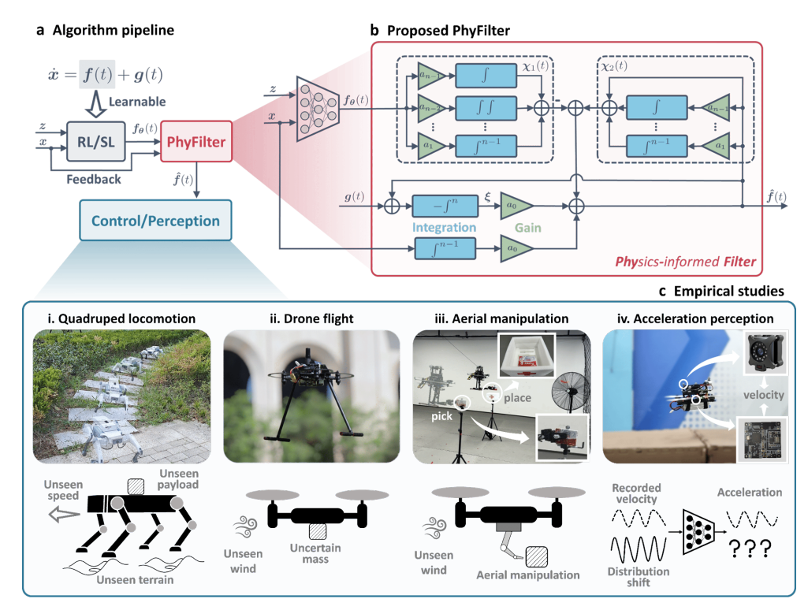
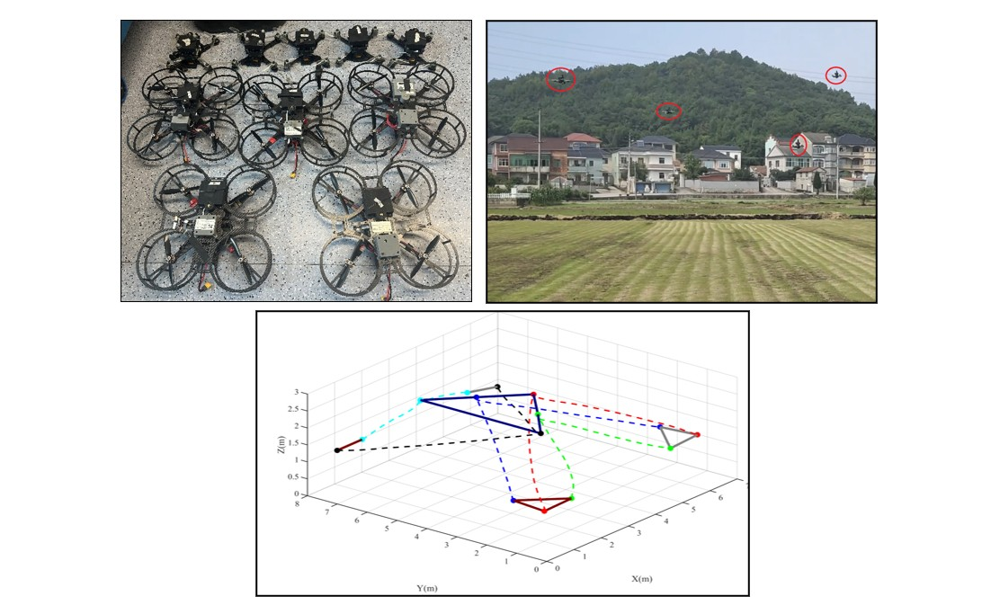
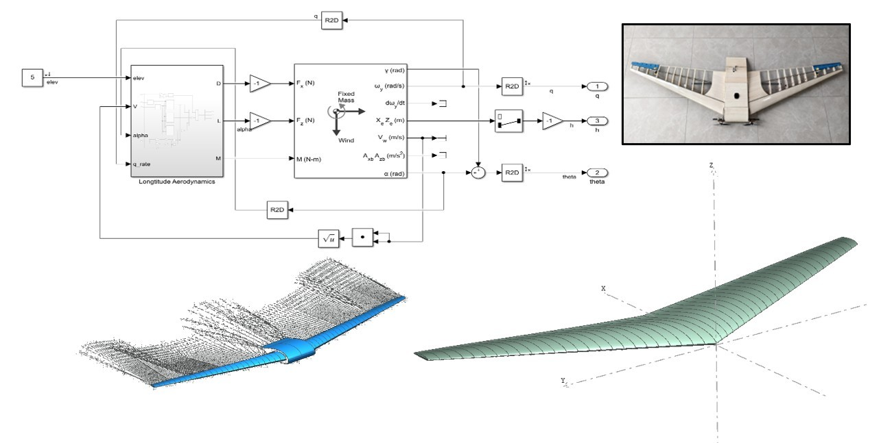
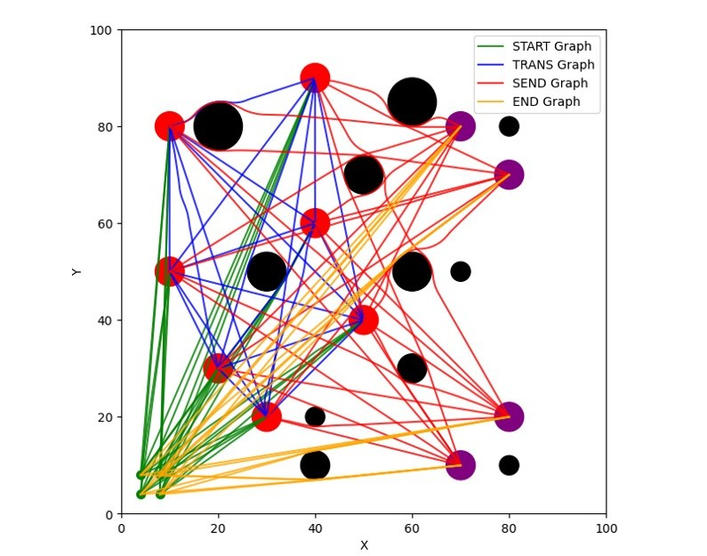
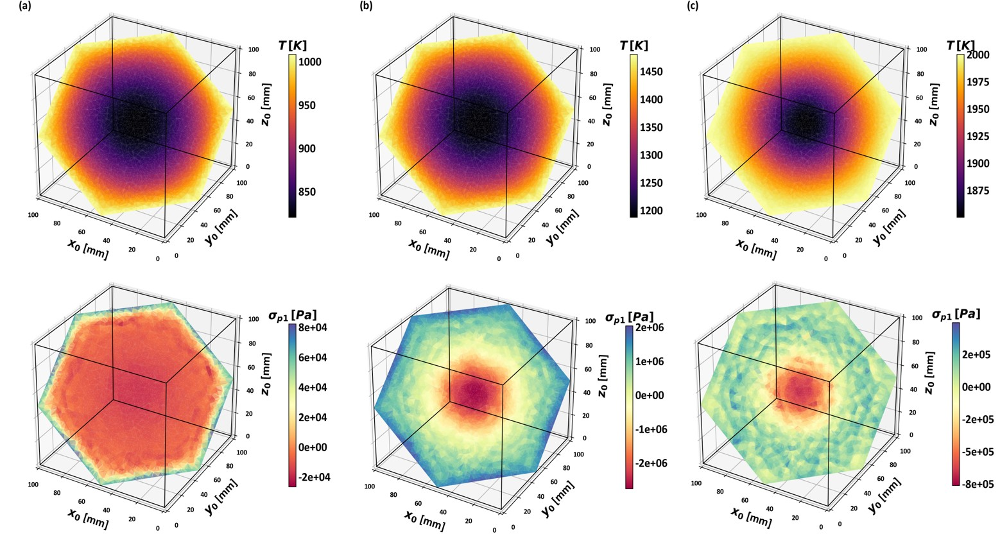
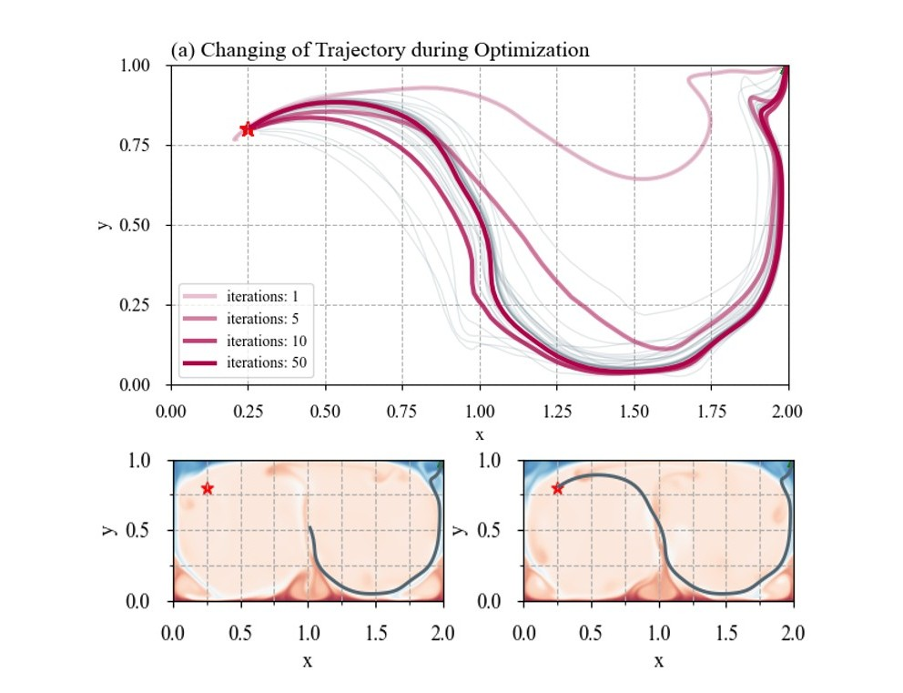
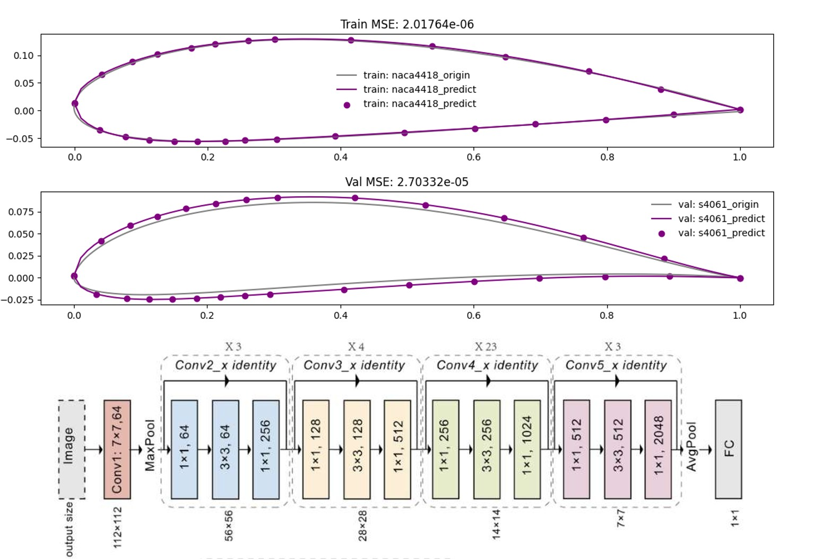
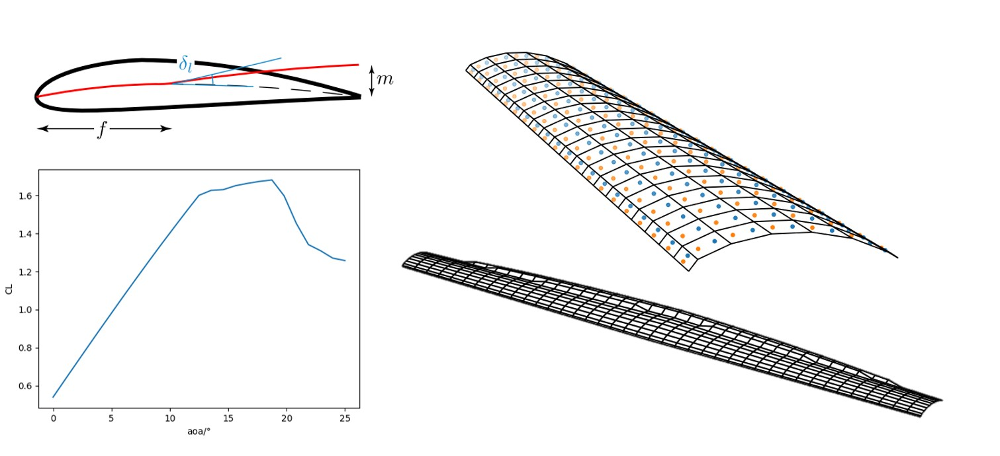
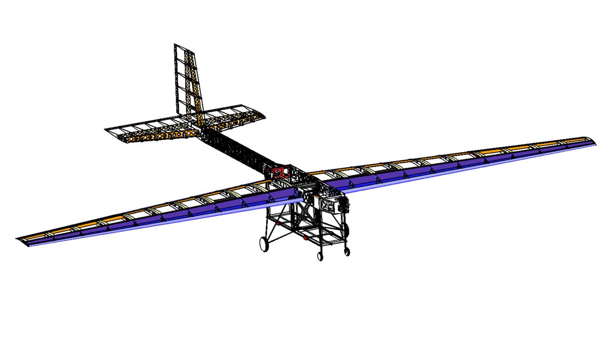

I study how control and learning can help robots move, adapt, and interact with the physical world.
My current work focuses on legged and humanoid locomotion.
I received my M.S. in Aerospace Science and Technology from
Beihang University in 2026, advised by
Prof. Kexin Guo.
Before that, I earned a dual bachelor's degree in Materials Science and Engineering from Northwestern
Polytechnical University and Queen Mary University of London. That path—from materials and aircraft to
control, learning, and robotics—continues to shape how I approach embodied intelligence.
A route shaped by building, modeling, and learning
My research interests did not begin at one fixed destination. Each stage added a different way of thinking
about physical systems, and together they led me toward embodied roybotics.
2019–2023
Engineering foundations
Materials science, aircraft design, simulation, and early experiments with learning-based engineering tools.
2023–2026
Control meets learning
Robot planning, UAV control, disturbance estimation, and feedback-informed learning for reliable autonomy.
2026–present
Embodied locomotion
Legged and humanoid locomotion research as a research intern at Galbot.
Next
Adaptive loco-manipulation
Pursuing a PhD focused on robots that can move, adapt, and manipulate across varied environments.
Publications
Learning and control for adaptable robots
My published work spans learning-based planning and control, as well as control-theoretic methods that make
learned dynamics more robust and generalizable. Publications are ordered newest first; highlighted entries
mark especially important work. * denotes equal contribution.
2026

npj RoboticsNew
Physics Filtering Favors the Generalization of Robot Learning
Jindou Jia, Shixuan Han, Meng Wang, Gen Li, Zihan Yang, Sicheng Zhou, Kexin Guo, Jianfei Yang, Xiang Yu, Wei Wang, and Lei Guo
Accepted by npj Robotics, 2026
A lightweight, model-agnostic physics-filtered feedback module that improves robot-policy generalization under dynamics uncertainty with limited training data.
These projects span different fields and do not all resemble my work today. I keep them here because each
one taught me how to build, model, test, or rethink a physical system—and without them, my current research
path would not exist.
Explore the project archive
8 projects · 2021–2024

Successive Convexification-Based Planning and Disturbance-Aware Tracking Control of Quadrotor Swarms
Multi-agent planning and tracking control for quadrotor formations under wind disturbances. Successive
convexification produces collision-free trajectories, paired with a disturbance-observer-based controller.

Design and Control Synthesis of a Flying-Wing UAV
Design and prototyping of a long-endurance Prandtl wing, including dynamic modeling, LQR control
synthesis, and differential-thrust stabilization of the Dutch-roll mode.

Graph-Based Multi-Robot Planning for Last-Mile Delivery
A framework combining time-optimal trajectory optimization with dynamic-programming-based task
allocation for multi-robot delivery scenarios.

Finite Element Simulation of 3D-Printed Alumina Sintering
A coupled porosity, heat-conduction, and sintering-stress model investigating temperature gradients
and potential stress overload in large porous green bodies.

Optimal Transportation in a Rayleigh–Bénard Turbulent Flow
An iterative-LQR solution to optimal transportation in time-varying turbulent flow, with local
Jacobians approximated using second-order central finite differences.

Deep CNN for Airfoil Inverse Design
A ResNet-based rapid-prototyping tool trained on 10,000 XFOIL-generated samples to predict candidate
airfoil shapes from target pressure distributions.

Potential-Flow Solver for Lift Prediction Under Flow Separation
An iterative vortex-panel solver that maps CFD-derived lift loss to an equivalent decambered airfoil
under attached-flow assumptions.

Design of a 16 kg Cargo UAV with High Maneuverability
Team design and prototyping of a fixed-wing competition aircraft combining a 16 kg payload capacity,
high lift-to-drag ratio, and strong maneuverability.